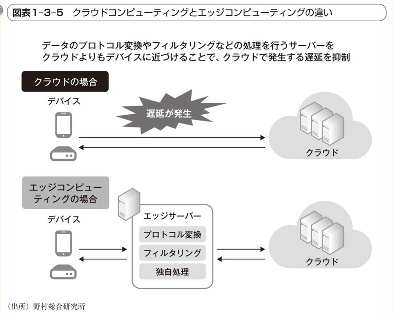
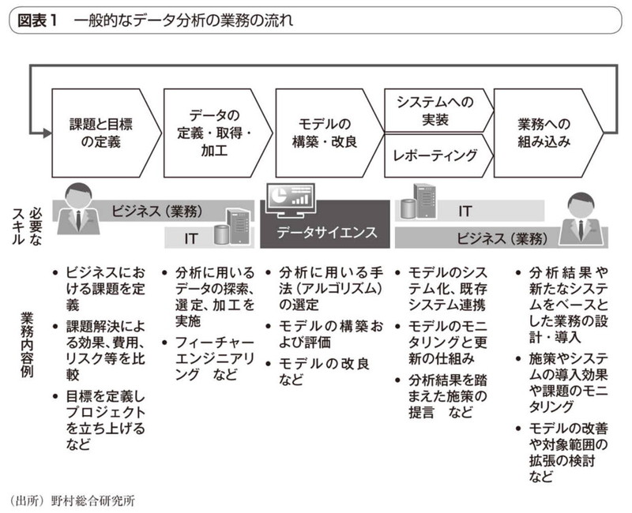
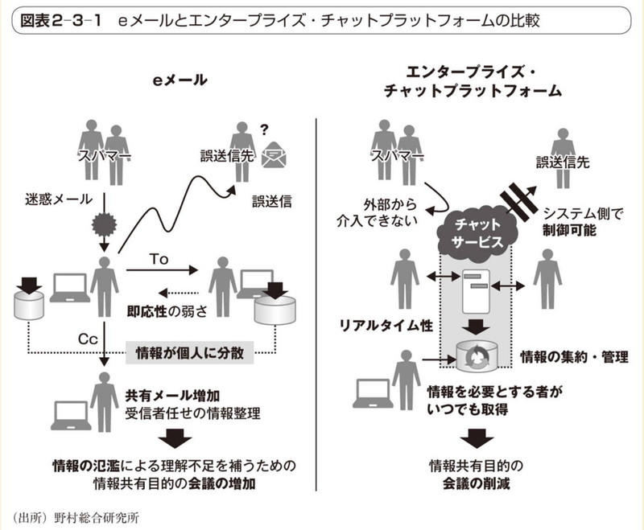
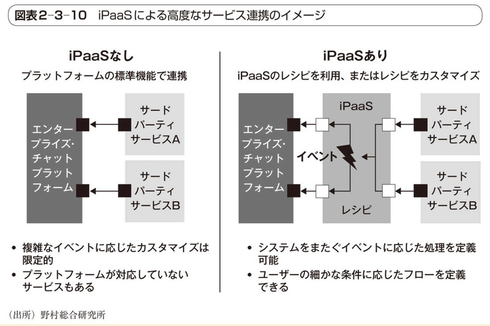
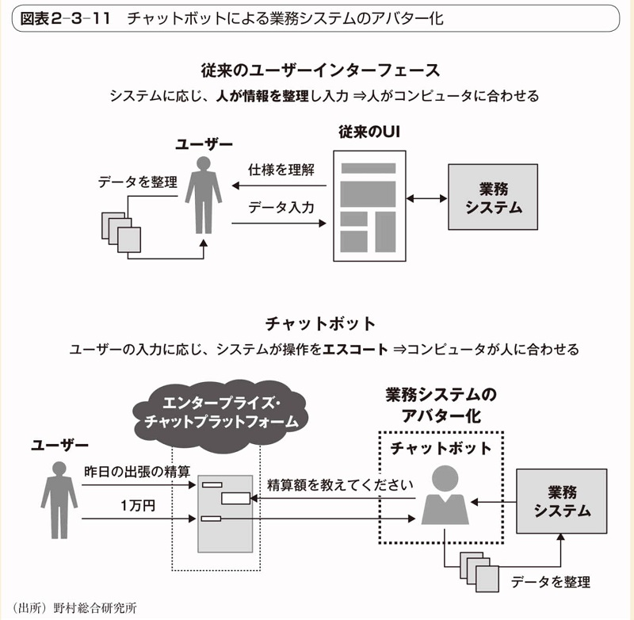
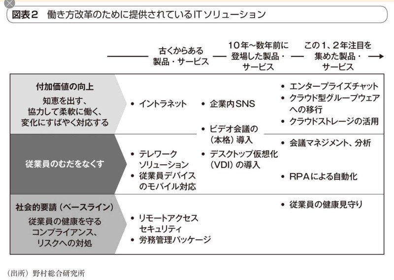
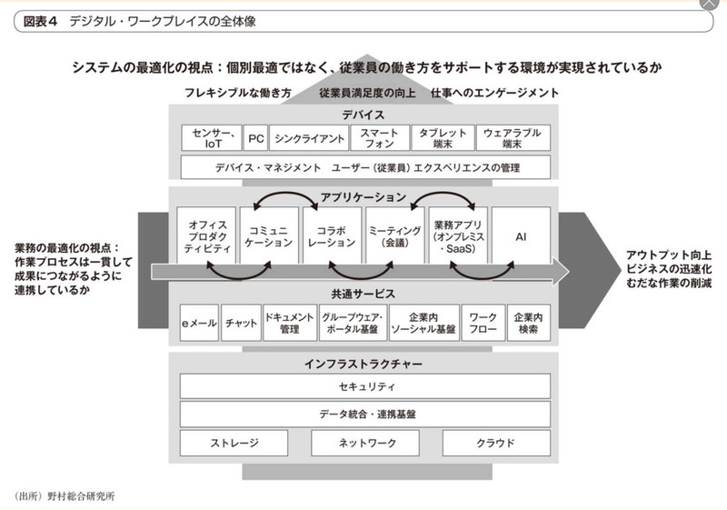

- DAX20-0402-1 ITロードマップ2018年版【2018年3月NRI】
- 【2018年5月30日】
- 第1章 ITロードマップとは
- 1.1 ITロードマップとは
 図表1-1-1 デジタル・ロジステックスのロードマップ
図表1-1-1 デジタル・ロジステックスのロードマップ
- 1.2 「ITロードマップ2017年版」の要約
- ①2017年のIT動向の総括
- 仮想通貨元年となったFinTech
- ランサムウェアやフィッシング、ビジネスメール詐欺の脅威
- ②2021年に向けた情報通信技術
- 人工知能(AI)-ディープラーニングによる人工知能の進化
- チャットボット-顧客との新たな接点
- VR(仮想現実)・AR(拡張現実)-デバイスの進化、プラットフォームの共通化で市場が拡大
- ペイメント2.0-決済体験の進化によるキャッシュレス社会の実現
- APIエコノミー2.0-APIエコノミーのビジネスモデルの進化
- FinTech-国内FinTechはキャズムを超えられるか
- デジタルマネーマネジメント-従来の金融サービスを変革する新たなキーワード
- デジタル・ロジスティクス-デジタルテクノロジーによるロジスティクス変革の始まり
- プログラマティック・マーケティング-マーケティング活動全体の最適化と自動実行
- 1.3 今後5年の重要技術トレンド
- ①ユビキタスAI時代の到来
- ②音声インタフェースの普及
- 企業はVUIへの準備が必要
- YUI(Voice User Interface)
- ③ホワイトカラー業務の自動化の進展
- RPAからIPAへ
- 図表1-3-4 RPAとコグニティブ技術、BPMとの連携イメージ
- RPA(ロボティック・プロセス・オートメーション)
- 人が端末で行うクリック、コピー、ペーストなどの定型作業をソフトウェアに設定
- 事務スタッフやホワイトカラーの作業を代替してくれる仕組み
- IPA(インテリジェント・プロセス・オートメーション)←RPA
- 画像認識や文字認識、自然言語処理などのコグニティブ（認知）技術や、BPM(ビジネス・プロセス・マネジメント)技術が取り込まれる
- 非定型業務、より高度なビジネスプロセスの自動化も実現可能になる
- 業務の効率化、コスト削減が期待できる
- チャットボット
- 日常会話をインターフェースとしたプログラム
- 今後は何らかの事務処理を代行する「処理代行チャットボット」が増加する
- チャットボットからRPAに指示を出して、各種処理を自動化
- ④エッジコンピューティングの台頭
- コンピュータネットワーク内のユーザに近い場所（エッジ）で、データの蓄積や演算処理といったコンピュータ処理を実行する
- 図表1-3-5 クラウドコンピューティングとエッジコンピューティングの違い
- 
- エッジコンピューティングの活用シーン
- 図表1-3-6 エッジコンピューティングにおける機械学習アルゴリズムの利用イメージ
- ⑤データサイエンスの民主化
- プログラミング不要で使えるデータサイエンスツールの登場
- 数学・統計の専門知識や高度なプログラミングスキルがないビジネスユーザや業務コンサルタントが、データサイエンス業務を可能にするツールが登場している⇒「データサイエンスの民主化」
- 図表1-3-8 データサイエンスツールのトレンドの変化
- DataRobot
- Alteryx
- Exploratory
- 第2章 5年後の重要技術
- 2.1 人工知能
-
- Word2Vecによる単語の分散表現
- エンコーダー・デコーダモデルによる文の処理
- 課題が多い文章の処理
- ①事例
- グーグルのニューラル機械翻訳
- Salesforce Einstein
- ②関連技術紹介
- マルチモデル・マルチタスク処理
- 「MultiModel」(2017年Google)
- 音声、画像、言語といったモダリティのタスクを1つのニューラルネットワークアーキテクチャで同時に学習することが可能
- 人間は、五感を介して情報を収集し、考え、必要な認識処理や行動を適宜実行する。これらのタスクは独立しているのではなく、全ての情報を統合的に処理することにより全体を理解し、必要に応じて適切な行動をとる
- ディープラーニングも複数のモダリティを適宜活用することにより性能を向上させていくと予想される
- 強化学習
- ③ITロードマップ
- 図表2-1-6 AI関連技術のロードマップ
- ~2018年度：ディープラーニングによる自然言語処理の黎明期
- 2018~2020年度：マルチモーダル化の進展
- 2021年度以降：AI技術の普及期
- 自然言語処理技術の進展
- ④日本におけるAI活用に向けた課題
- 第1の人材は、最新の論文を随時チェックし、他社に先んじて先端技術を習得し、自社製品・サービスに取り込むことのできる技術者
- 第2の人材は、多様なAI技術の特性を理解してそれらをビジネスに適用できる人材
- 【コラム】データサイエンティスト・プラットフォーム
- 一部のデータ分析業務を自動化し、データサイエンティストの業務を効率化することができる「データサイエンティスト・プラットフォーム」に注目が集まり始めている
- 図表1 一般的なデータ分析の業務の流れ
- 
-
- 2.2 AIアシストデバイスデバイス
- 人と機械とのコミュニケーション方法
- CUIからGUI
- GUIからNUIへ
- NUI（Natural User Interface）
- より直観的かつ事前な動作で操作
- タッチ操作、ジェスチャー操作等
- VUI(Voice User Interface)
- ユーザの発話内容を理解し、音声で操作
- BMI(Brain-machine Interface)
- ユーザの脳波を読み取り操作
- 図表2-2-1 ユーザインタフェースの移り変わり
- ①事例
- アマゾンのAIアシスタントデバイス「Amazon Echoシリーズ」
- ②ITロードマップ
- AIアシスタントデバイスのアプリケーション（スキル）と開発プラットフォーム
- AIアシスタントデバイスでのユーザーインターフェースの変化
- 図表2-2-9 AIアシスタントデバイスのロードマップ
- 2018年～2019年度：スピーカー型AIアシスタントデバイスの普及と話者認識技術の活用が開始
- 2020年～2021年度：スマート家電や車載などにAIアシスタントデバイスが拡大
- 2022年度以降：AIアシスタントデバイス間の連携と、ユーザー状況（コンテキスト）データの活用の本格化
- ③実現に向けた課題
- 【コラム】チャットボットの活用事例と行方
- チャットボットの活用事例と行方
- 2.3 エンタープライズ・チャットプラットフォーム
- eメールからチャットサービスへの社内コミュニケーションの刷新と業務システムの統合による生産性の向上
- 図表2-3-1 eメールとエンタープライズ・チャットプラットフォームの比較
- 
- なぜ今、エンタープライズ・チャットプラットフォームが注目されるのか
- 図表2-3-2 主な企業向けチャットサービスの変遷
- 図表2-3-3 第1期と第2期ブームの違い
- 主要ベンダーの動向
- その他の特徴あるサービス
- ①事例
- ソフトウェア企業での生産性向上を狙った導入
- 図表2-3-8 従来のソフトウェア開発とChatOpsの違い
- メディア企業でのCMS（コンテンツ）としての活用
- 図表2-3-9 メディア企業でのエンタープライズ・チャットプラットフォームの活用
- ②関連技術の紹介
- 検索のパーソナライズ
- iPaaS（ Integration Platform as a Service）
- エンタープライズ・チャットプラットフォームを外部から支える重要な技術が「iPaaS」である。
- 図表2-3-10 iPaaSによる高度なサービス連携のイメージ
- 
- 一般に、IFTTT(if this then that)と呼ばれるレシピ（テンプレート）をカスタマイズすることでプロセスを定義できるようになっている
- IFTTT
- Microsoft Flow
- チャットボット
- 図表2-3-11 チャットボットによる業務システムのアバター化
- 
- ③ITロードマップ
- 図表2-2-12 エンタープライズ・チャットプラットフォームのロードマップ
- 2017～2018年度：黎明期。ビジネスプラットフォームを目指すサービスが登場
- 2019～2020年度：発展期。業務システムとの統合が進む
- 2021年度以降：普及期。ビジネスプラットフォームとして普及
- ④実現に向けた課題
- 2.4 VR(Virtual Reality)・AR(Augmented Reality)
- ①事例
- ②関連技術の紹介
- ③ロードマップ
- 図表2-4-6 VR・ARのロードマップ
- 2018～2019年度：第1世代VRヘッドセットの値下がりと一体型ヘッドセットの登場
- 2020～2021年度：5Gの商用化によってVR・ARサービスが高度化
- 2022年以降：VR・ARの融合とMR(Mixed Reality：複合現実)の実現
- MRは、「仮想空間を主」として、現実社会の情報を反映させる技術
- ④5年後の利用イメージ
- ⑤実現に向けた課題
- 【コラム】人間拡張（Augmented Human）
- 図表1 人間拡張における4つの能力拡張と関連技術
- 2.5 量子コンピュータ
- ①事例
- ②ITロードマップ
- 図表2-5-4 量子コンピュータのロードマップ
- ③20年後の利用イメージ
- ④実現に向けた課題
- 量子アルゴリズムの開発
- 第3章 複合的なITの活用による新サービスの可能性
- 3.1 金融×AI
- ①事例
- ②関連技術の紹介
- ③ITロードマップ
- 図表3-1-11 金融×AIのロードマップ
- ④実現に向けた課題
- 3.2 ロボ・アドバイザー2.0
- 図表3-2-2 欧米ロボ・アドバイザーの機能の変遷
- ①事例
- ②ロードマップ
- 図表3-2-8 ロボ・アドバイザーのロードマップ
- ③5年後の利用イメージ
- ④実現に向けた課題
- 3.3 マーケティング×AI
- ①事例
- ②関連技術の紹介
- 認識：自然言語処理
- 認識：画像認識
- 行動：自然言語生成
- 学習：機械学習
- 学習：強化学習
- ③ITロードマップ
- 図表3-3-11 マーケティング×AIのロードマップ
- ④実現に向けた課題
- AIに対する期待と誤解
- 学習データの蓄積
- 人とAIの棲み分け
- 【コラム】働き方改革とテクノロジー
- 日本における働き方改革は、短期的には労働人口の減少に備えた無駄の節約や労働者の健康維持といった分野への取り組みが急務とみなされる
- それだけでは十分でなく、働き方改革のもう一つの側面である生産性の向上に注目し始めるだろう
- 1．企業による働き方改革への取り組みの背景
- 2．効率化と従業員を守るためのIT
- 図表2 働き方改革のために提供されているITソリューション
- 
- 3．生産性向上のための「デジタル・ワークプレイス」
- 効率の追求から生産性の向上へ
- デジタル化時代に即した職場環境＝デジタル・ワークプレイスの必要性
- デジタル・ワークプレイスとは、デジタル化時代のデバイスやテクノロジーを駆使して、働くプロセスや場所・コミュニケーション、コラボレーションのあり方を新たに組み立てようとする考え方
- 図表4 デジタル・ワークプレイスの全体像
- 
- 業務の最適化の視点：「業務の一貫した流れ」とは何か
- 業務の最適化を図り、アプトプットの両・質の向上やビジネスを迅速に進めていくためには、一般して業務をつなげていくという考え方でそれぞれの要素を連携させていく必要がある
- 図表5 API連携による仕事の一貫した流れの実現イメージ
- システムの最適化の視点：従業員エクスペリエンスを向上するシステムの連携
- 従業員にとって、いつでもどこでも柔軟な働き方ができるインフラやアプリケーションが一貫して提供されることで、仕事をする上での利便性やユーザビリティが向上する
- AIが人間をアシストする「インテリジェント・ワークプレイス」に向かう
- これまでの業務の流れとIT提供のあり方を見直すことで、企業全体としてより高い生産性を目指す仕組みを工夫・構築するものである
- AIが従業員の能力を補い、人間が気づかない部分をコンピュータがアシストすることが可能になりつつある
- 中長期的に本質的に生産性を上げていくために、企業はデジタル・ワークプレイスの実現に向けた戦略を策定し、業務の一貫した流れと従業員エクスペリエンスを向上させるシステムのあり方を検討していく必要が出てくる
- 図表6 働き方改革×テクノロジーのステップ
- 第4章 ビジネスを加速させるセキュリティ技術
- 4.1 IDと認証セキュリティ
- 利便性とセキュリティの両立へ向けた新たな動向
- エグゼクティブサマリ
- ●サマリ
- パスワードに代わる認証手段として、指紋や顔画面などを活用した生体認証や、認証結果を完全にやりとりできる「FIDO」の普及が期待されている
- 携帯電話をWebサービス全般の汎用的な認証手段として利用するための「Mobile Connect」が注目されている
- ●ロードマップ
- ●課題
- GDPR対応
- ①認証セキュリティとNIST SP 800-63の改定
- 図表4-1-1 NIST SP 800-63のドキュメント構成
- 保証レベルの導入
- IDを利用する場面ごとのリスクに応じて検証プロセスの強度を選択するという考え方が導入された
- パスワードの定期変更や複数文字種の強制は非推奨に
- 「パスワードは定期変更すべき」「パスワードは複数の」文字種で混成すべき」などの、従来は常識とされてきた対策についても、実効性や技術の進展に合わせた見直しが図られてる
- ②パスワードレス認証の動向
- 生体認証
- テンプレート漏えいへの対策
- 事前に登録しておく特徴を「テンプレート」と呼ぶ
- 一度テンプレートが外部に流出してしまった場合、その影響は計り知れない
- 生体認証の課題
- FIDO(Fast Identity Onlinbe)
- 生体認証やデバイス認証などのパスワード認証に代わる認証方式を実現する際のフレームワーク
- 認証結果を公開鍵暗号方式により」ネットワーク上で安全にやりとりするための仕様が定められており、認証に必要な秘密情報は認証を行う端末のみに保存され、ネットワーク上での伝送やサーバーに保存する必要がない
- モバイル認証（GSMA Mobile Connect）
- 移動通信事業者（MNO:Mobile Network Operator）の業界団体であるGSMアソシエーション（GSMA）が普及を推進している、携帯端末をWebサービスの認証機器として使用できるようにするための仕様「Mobile Connect」
- ③ITロードマップ
- 図表4-1-5 IDセキュリティのロードマップ
- ④課題
- GDPR
- 4.2 APIセキュリティ
- オープンAPIをめぐる法整備と業界ルール策定の動き
- 欧州・API化規制における金融機関とサーボパーティの攻防
- そもそもAPIとは何か？
- 安全な「権限委譲」がAPI経済圏を作る
- 図表4-2-2 全体を俯瞰してユーザとのタッチポイント・サービスを最適化する
- ①関連技術
- 安全な「権限委譲」を支える標準技術
- 図表4-2-3 ビジネスプロファイリングの軸・変数の抽出例
- 図表4-2-4 APIがもたらす「攻め」と「守り」の価値
- APIセキュリティにかかる技術動向
- 図表4-2-5 Webアプリケーションにおけるセキュリティの状況
- 図表4-2-6 オープンAPIにおけるセキュリティの状況
- トークンによるAPIアクセス認可
- 鍵となる標準仕様
- ②ITロードマップ
- プロファイリングの課題と標準化
- 図表4-2-7 APIセキュリティのロードマップ
- ③課題
- API基盤におけるセキュリティ対策
- サードパーティの適切な管理
- 4.3 ブロックチェーンにおけるセキュリティ
- ブロックチェーン／仮想通貨の分類と全体像
- ①プラットフォームにおけるセキュリティ
- プラットフォームとしての機密性・完全性・可用性
- コンセンサス攻撃（51%攻撃）
- 暗号アルゴリズムの危殆化
- バグ／機能改善
- ②アプリケーションにおけるセキュリティ
- スマートコントラクト
- サードパーティの脆弱性
- 鍵管理とアーキテクチャ
- ファイナリティへの考慮
- コンソーシアム型のセキュリティ
- ③ITロードマップ
- 図表4-3-4 ブロックチェーンのセキュリティ関連のロードマップ
- ④課題
- 【コラム】サイバーセキュリティ×AI
- サイバーセキュリティ分野で機械学習が活用される背景
- 従来型サイバーセキュリティ対策の限界
- 機械学習への期待
- マルウェア検知への応用
- ネットワーク異常検知への応用
- ソースコードレビューへの応用
- セキュリティ監視の運用支援への応用
- 機械学習を活用する上で押さえるべきポイント
- 誤検知の可能性が避けられない
- 判定結果の分析が困難である
- 全てに万能な機械学習アルゴリズムは存在しない
- サイバーセキュリティ×AIのこれから
- インシデント検知：機械学習が活躍
- クリティカルな意思決定：セキュリティ専門家の重要性は変わらない
- 機械学習を適材適所で活用する
- 【コラム】インターネットアクセスにおけるセキュリティの新技術
- インターネットアクセスにおけるセキュリティ技術要素マップ
- 図表1 インターネットアクセスにおけるセキュリティ技術要素マップ
- 図表2 インターネットアクセスにおけるセキュリティ機能とその解説
- マルウェア対策における脅威の進化と対策
- シグネチャーに依存しないマルウェア対策ソリューション
- EDR(Endpoint Detection and Response)
- 常時SSLの普及
- クラウドサービス（SaaS）の普及に伴う情報流出流出の増大
- 今後のインターネットアクセスセキュリティ